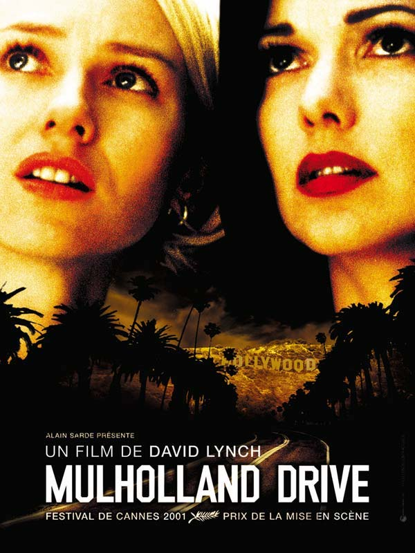
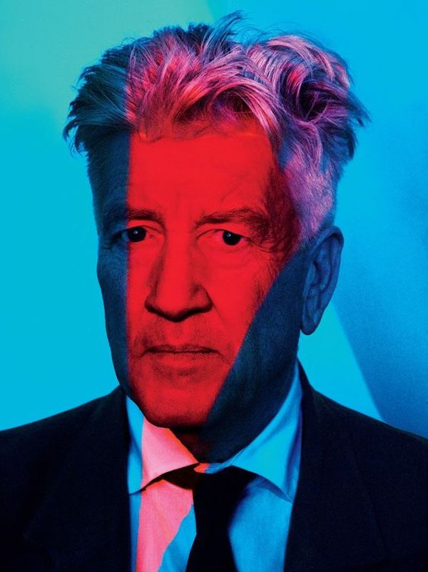
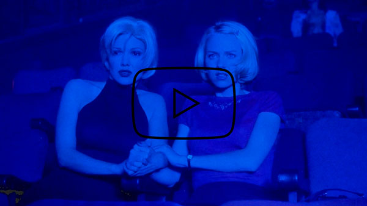

ANGELO BADALAMENTI
Angelo Daniel Badalamenti est un auteur, auteur-compositeur, artiste d’enregistrement, musicien, compositeur de films et chef d’orchestre. Il a travaillé dans le monde de la musique de 1971 jusqu’à sa mort en 2022. Ces œuvres principales en tant que compositeur de musiques de film sont: «Blue Velvet», «Twin Peaks», «Mulholland Drive» et «Une histoire vraie», tous réalisées par David Lynch. Possédant de nombreuses récompenses, Badalamenti est un des artistes phares depuis les années 70. Il est notamment connu pour ses nombreuses collaborations avec David Lynch. Il apparait même dans certains de ces films comme: «Mulholland Drive» et «Blue Velvet». Pour finir, Angelo Badalamenti est un artiste à succès aillant collaboré avec des artistes tels que Michael Jackson, David Bowie, Paul McCartney, etc. Malgré son succès il n’a jamais quitté son lieu d’origine: le New Jersey.

Badalamenti en 2014
DAVID LYNCH & ANGELO BADALAMENTI

Dîner d'ouverture de l'exposition «Unified Field» en septembre 2014 à la «Pennsylvania Academy of the Fine Arts.»
Les deux artistes se sont connus en 1986 lorsque David Lynch cherchait un coach vocal pour Isabella Rossellini dans «Blue Velvet». Angelo ne devant être que ce coach vocal fini par composer toute la bande originale du film. Depuis cela, Lynch et Badalamenti sont devenus l’un des plus célèbres binômes auteur-compositeur.
MULHOLLAND DRIVE
Mulholland drive est un film réalisé par David Lynch. Il s’agit d’un thriller/drame psychologique américain, sorti en 2001. La bande originale de ce film a été composée par Angelo Badalamenti.
David Lynch, 22 mars 2017, par Pari Dukovic
SYNOPSIS
Pendant une nuit à Hollywood, un accident de voiture se produit. Dans cet accident une femme perd la totalement mémoire et ne sait plus qui elle est. Grâce à l’accident, la femme échappe à son propre meurtre qui allait se produire juste avant l’impact. Suite à ça, elle se lie d’amitié avec Betty Elms, une comédienne en herbe qui vient tout juste d’arriver à Hollywood. Ensemble elles essayent de tout faire pour que Rita, la jeune femme amnésique, retrouve la mémoire.
BANDE ORIGINALE
«L’album se présente comme un film typique de Lynch, s’ouvrant sur un
Jitterbug rapide et agréable, puis s’enfonçant lentement dans des
passages aux cordes plus sombres, dans les sons de guitare tordus de la
musique de restaurant des années 1950 et, enfin, dans les dessous
stratifiés, dérangeants et souvent déroutants de la partition.»
— Neil Shurley, 2002
La partition de Badalamenti dans Mulholland drive est qualifiée comme la plus inquiétante qu’il n’ait jamais faite. Le film étant un thriller/ drame psychologique, cela appuye cette impression de mystère et de peur. On perçoit cependant un fort contraste entre cette impression de mystère et l’arrivée de Betty Elms à Los Angeles. Lorsqu’elle arrive à Los Angeles on est plutôt dans une ambiance plus douce, qui donne espoir, éclairante.
ILORANDO
Ilorando – «Crying» en anglais – est une chanson composée par Angelo Badalamenti et chantée par Rebekah Del Rio. C’est une chanson qui nous parvient à un moment crucial du film. Cette musique nous fais ressentir une grande tristesse. Elle parle d’amour non réciproque et de la souffrance que l’on ressent lorsqu’on essaie d’oublier un être qui nous est cher. Tous les pleurs que l’on évacue lors d’une rupture amoureuse.
